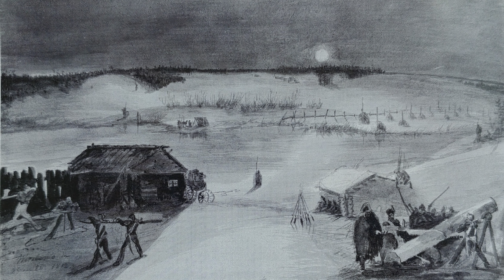
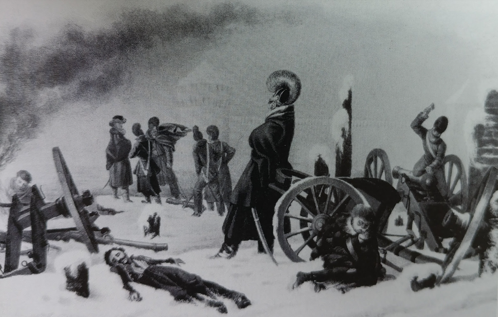
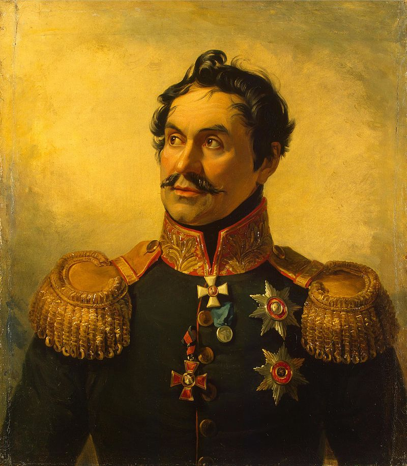
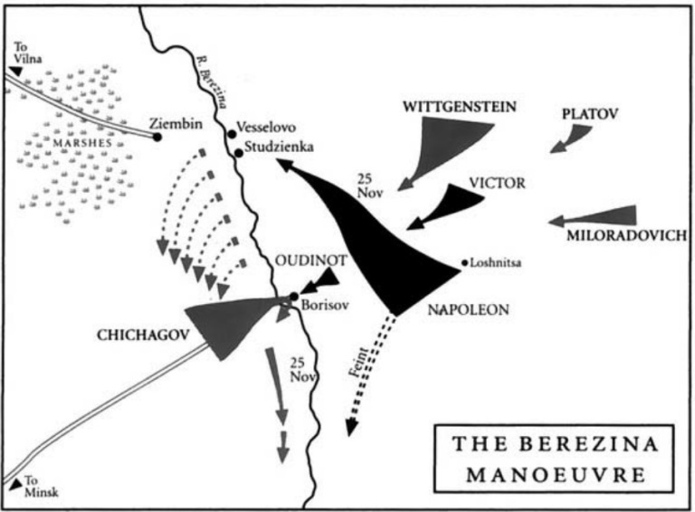

싸구려 미끼의 가성비 - 11월 26일 새벽의 눈치 작전
게시: 2021-09-13T06:30:57+09:00
우디노의 제2군단 소속 공병 750명이 오브리(Aubry) 장군 지휘 하에 이미 전날인 11월 24일부터 현장에 도착하여 다리를 놓을 목제 구조물, 그러니까 지주(支柱, strut)와 가대(trestle) 등을 만들고 있었습니다. 재료는 스투지엔카 마을의 농가들이었습니다. 공병들은 농가들의 기둥과 대들보 등을 해체하여 재료로 썼습니다. 11월 25일 낮부터는 에블레 장군 휘하의 전문 부교병 400명이 도착하여 작업에 합류했습니다. 이들은 대부분 네덜란드인들이었는데, 이들은 절대적으로 필요했던 장비들, 즉 마차 6대 분량의 각종 공사 도구들과 2기의 이동식 풀무, 그리고 그 풀무에 사용할 연료인 석탄까지 마차 2대분을 가지고 왔습니다. 대체 이들은 어디서 이런 장비들을 구할 수 있었을까요? 이 장비들을 확보할 수 있었던 것은 오로지 에블레 장군의 독단 덕분이었습니다. 며칠전, 오르샤의 군수품 창고 안에서 발견된 품목에는 완전한 한 세트의 조립식 부교와 이런 장비들이 포함되어 있었지요. 한 문이라도 더 많은 대포를 확보하려 했던 나폴레옹은 그런 불필요한 자재들은 다 불살라버리고 그런 마차를 끌 말들을 모두 대포 수송용으로 돌리라고 명령했습니다. 그러나 에블레 장군은 '모든 책임은 내가 진다'라며 나폴레옹 몰래 저렇게 많은 수의 장비 마차들을 빼돌렸던 것입니다. 덕분에 공병들과 부교병들은 교량 건설에 필요한 각종 못과 죔쇠 등의 철물들을 필요한 대로 척척 만들어낼 수 있었습니다. 이것이 바로 프랑스군의 장점이었습니다. 지휘관들이 그냥 시키는 대로 로봇처럼 움직이는 것이 아니라 단독으로 책임을 지고 나름대로의 판단을 내릴 정도로 융통성이 있었고, 나폴레옹도 그런 것을 장려했다는 것이지요. 흔히 나폴레옹이 워낙 위대한 천재일 뿐 프랑스군은 별 것 아니라는 평가도 있지만 결코 그렇지 않았다는 좋은 사례라고 할 수 있습니다.

(11월 25일 밤 스투지엔카에서의 모습입니다. 원래 민간인일 때는 화가였다가 징집되어 우디노 휘하의 척탄병이 된 프랑수아 필스(Francois Pils)라는 사람이 그린 것인데, 강 너머에 프랑스군을 감시하는 코삭 기병이 서있는 것이 보입니다. 그리고 좌측 지평선 쪽 하늘이 약간 밝게 보이는 것은 러시아군 야영 캠프의 모닥불 때문입니다.)

(나폴레옹이 대포에 집착했던 것도 이해는 가는 일이었습니다. 당시 전술에서 대포의 역할은 결정적이었는데, 후퇴하는 도중 손실된 대포의 수가 너무 많았던 것입니다. 가령 네의 제3군단은 가진 대포를 모조리 다 버리고 후퇴해야 했습니다. 그림은 제3군단 예하 제25 뷔르템베르크 사단의 포병들이 드네프르 강에서 대포를 버리기 전에 점화구에 구리못을 박아넣는, 즉 스파이크(spiking) 작업을 하는 모습입니다. 당시 대포는 저 점화구멍만 틀어막으면 정말 쓸모가 없어졌기 때문에, 대포를 버리고 갈 때는 무른 구리못을 점화구에 박아넣고 망치질을 했습니다. 기병들도 적의 포병대에 돌격해서 잠시 적의 포대를 점거할 때를 대비하여 안장에 구리못과 작은 망치를 넣고 다니기도 했습니다.) 하지만 11월 25일 밤, 베레지나 강가 스투지엔카 마을의 상황은 매우 비관적이었습니다. 여기서도 베레지나는 깊이가 최대 2m에 달했고 너비는 20m 정도였습니다. 강폭이 20m라면 그다지 넓은 것은 아니었으나, 지류가 흐르고 물 웅덩이가 여기저기 널린 강변 지역이 넓었기 때문에 놓아야 하는 다리가 생각보다 길어야 했습니다. 게다가, 맞은 편의 서쪽 강변이 프랑스군이 모인 동쪽 강변보다 더 높은 고지대였고, 게다가 급경사였습니다. 거기에 작은 경포라도 2~3문 있다면 전체 그랑다르메의 발이 꼼짝없이 묶여야 할 판이었습니다. 그런데, 정말 거기에는 러시아군의 포병 1개 포대 4문이 배치되어 있었습니다. 뿐만 아니라 그 일대 곳곳에 코삭 기병이 배치되어 프랑스군이 어디에 다리를 놓는지 면밀히 감시하고 있었습니다. 상황이 이랬기에 현장에 도착한 주요 지휘관들은 비관 일색이었습니다. 크라스니의 영웅이자 바로 며칠 전 얼어붙은 드네프르 강을 건넌 장본인인 네는 건너편 지형과 러시아군 상황을 보고는 랍(Rapp) 장군에게 이렇게 말했습니다. "이 위치는 전혀 가망이 없네. 내일 나폴레옹이 여기를 통해 빠져나갈 수 있다면 그 양반은 악마 본인일 거야 (Il est le Diable même)." 언제나 무모할 정도로 낙천적이며 용감무쌍하던 나폴리 왕 뮈라조차도 소수 정예의 폴란드 기병대와 함께 나폴레옹이 먼저 탈출해야 한다고 주장했습니다. 뮈라는 여전히 허풍을 떨며 이렇게 말했습니다. "우리는 모두 여기서 죽을 거야. 항복이란 있을 수 없는 일이지." 우디노와 에블레는 강 건너 코삭 보초병의 감시를 피하기 위해 공병들과 부교병들이 작은 언덕 뒤에서 침묵 속에 작업하도록 했습니다만 마을의 농가들을 때려부수고 망치질과 톱질, 죔쇠 등을 모루 위에서 두들겨 만드는 소음까지 숨길 수는 없었습니다. 이 일대를 감시하는 러시아군은 아르놀디(Arnoldi)라는 대위 지휘 하에 있었는데, 아르놀디가 보기에 동쪽 강변에서의 움직임으로 보아 프랑스군은 이 스투지엔카에서 도강하기 위해 임시 교량을 놓을 준비를 하고 있는 것이 분명했습니다. 그는 여기가 프랑스군의 도강 지점임을 확신하고 그의 상관이자 보리소프 북쪽 지역의 감시 책임자인 차플리츠(Eufemiusz Czaplic) 장군에게 그렇게 보고했습니다. 심지어 차플리츠 장군은 아르놀디 대위의 판단이 옳은 것인지 확인하기 위해 직접 현장까지 달려와 망원경으로 살펴보았습니다. 차플리치 장군도 아르놀디와 같은 판단을 내렸고, 그는 총사령관인 치차고프 제독에게 파발마를 띄워 이 사실을 급히 알렸습니다.

(차플리츠(Eufemiusz Czaplic, Yefim Chaplits) 장군입니다. 나폴레옹보다 1살 더 연상이었던 그는 원래 폴란드 귀족 가문 출신으로서 폴란드군에서 군 생활을 시작했으나 폴란드 분할 이후 러시아군으로 이적하여 러시아군을 위해 봉사했습니다. 우리나라로 치자면 친일파였지요. 1794년 폴란드의 애국자인 코시우스코(Kościuszko)의 반란이 일어나자 그는 러시아군의 입장에서 폴란드 독립군과 협상을 하러 갔다가 폴란드군에 체포되기도 했습니다. 이후 1796년 페르시아 전선에 투입되어 공을 세우기도 했으나, 파벨 1세는 페르시아와의 전쟁을 끝내고 차플리츠를 해임했습니다. 하지만 파벨 1세 암살 이후 등극한 알렉산드르는 그를 다시 불러들여 장군으로 승진시켜주었습니다. 그는 아우스테를리츠 전투에도 참전했으며, 1812년 이후에는 라이프치히 전투에도 참전했습니다. 장수하지는 못해서 1825년에 57세로 죽었습니다.) 이 사실을 알 리 없던 베레지나 동쪽 강변의 그랑다르메는 실낱같은 희망을 버리지 못하고 계속 지주니 가대니 하는 임시 교량의 부품들을 만들고 있었습니다. 운명의 11월 26일 새벽이 밝았습니다. 강 건너를 초조히 바라보던 우디노의 망원경에 모닥불을 피워놓고 밤을 보낸 러시아 보병들이 짐을 싸는 것이 보였습니다. 아울러 강변에 방열되어 있던 러시아군의 대포 4문의 포가가 말에 채워져 어디론가 사라지는 것도 목격되었습니다. 기적이 일어난 것입니다. 대체 어떻게 된 것이었을까요? 이유는 지금까지 불명확합니다만 치차고프가 나폴레옹이 지난 23일에 놓았던 싸구려 미끼를 낚시바늘은 물론 찌까지 덜컥 삼켜버린 것입니다. 즉 베레지나 강의 하류에 작은 분견대를 보내 일부러 소란을 피우며 강을 건널 것처럼 준비시켰던 것이 제대로 효과를 발휘했습니다. 특히 프랑스군이 일부러 그 지역의 유태인 상인들과 흥정하는 척 하면서 거기서 강을 건널 것이라고 정보를 흘린 것이 주효했습니다. 그 유태인 상인들은 그대로 치차고프의 사령부를 찾아갔고, 무슨 이유에서인지 그들의 말을 철썩같이 믿은 치차고프는 베레지나 강 하류 쪽에 병력을 모으고 있었습니다. 게다가 빅토르 휘하 사단 중 최근 폴란드에서 새롭게 행군하여 러시아에 진입한 1개 사단을 보리소프에 배치하고 계속 보리소프에 대군이 집결해있는 것처럼 꾸몄던 것도 큰 역할을 했습니다.
그런 와중에 차플리츠 장군이 보낸 전령이 스투지엔카에서 프랑스군이 강을 건널 것 같다는 소식을 전해왔으나, 치차고프는 오히려 그 전령에게 '너희가 속은 것이니 당장 병력을 이끌고 하류 쪽으로 달려오라'는 명령서를 보냈던 것입니다.

(보리소프에서 대치하며 하류 쪽에서는 페이크 모션을, 상류의 스투지엔카에서는 임시 다리를 놓는 모습입니다. 스투지엔카 일대의 강변에서 차플리츠 장군의 부대들이 철수하는 모습도 표시되어 있습니다. 동쪽 뒤편에서 나타난 첫번째 러시아군은 북쪽에서 내려온 비트겐슈타인의 부대였습니다.) 이제 프랑스군에게 남은 것은 밤새도록 뚝딱거리며 만든 부품들을 이용하여 다리를 놓는 것이었습니다. 그러나 두꺼운 얼음들이 떠내려오는 차가운 강물 속에 어떻게 다리를 놓을 수 있었을까요? 프랑스군에게는 조각배 한 척 없었습니다. Source : 1812 Napoleon's Fatal March on Moscow by Adam Zamoyski
https://en.wikipedia.org/wiki/Battle_of_Berezina https://weaponsandwarfare.com/2017/06/19/the-berezina-1812-part-i https://en.wikipedia.org/wiki/Yefim_Chaplits